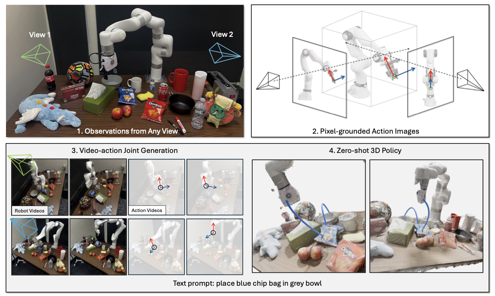
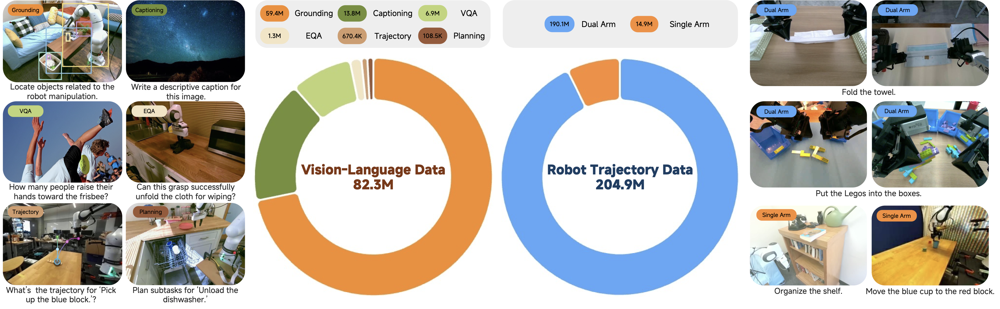
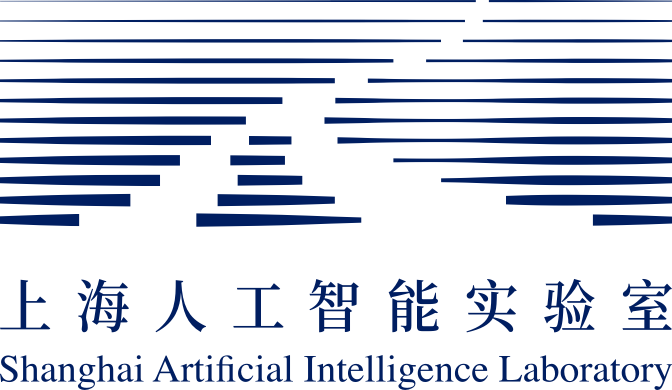

Xiaomi-Robotics-1: Scaling Vision-Language-Action Models with over 100K Hours of Real-World Trajectories
Core Contributor: Qiao Sun · Xiaomi Robotics Team
Scaling robotic learning with over 100K hours of real-world manipulation trajectories.

Xiaomi Robotics · Robot Foundation Model Team
Towards Building Embodied Intelligence that Can Understand & Interact with the Physical World.
I am a Researcher with the Robot Foundation Model Team at Xiaomi Robotics, while continuing my visiting research at UMass Amherst & MIT-IBM Watson AI Lab under Prof. Chuang Gan and Dr. Yilun Du. My academic journey took an unconventional path — from Civil Engineering and Financial Management at Tianjin University, to Electrical and Computer Engineering at Fudan University, before fully committing to AI research.
My research centers on embodied AGI — building robots that can perceive, reason about, and physically interact with the world. I work at the intersection of world models, vision-language-action models, and scalable robotic learning, aiming to translate the recent breakthroughs in foundation models into the physical world.
Proud to be a core contributor to Xiaomi-Robotics-1, scaling VLA learning with over 100K hours of real-world trajectories. See the project page.
Representing Xiaomi Robotics at ICRA 2026, with visits to ETH Zurich and Xiaomi Europe R&D Center.
Action Images: End-to-End Policy Learning via Multiview Video Generation is now on arXiv.
Xiaomi-Robotics-0, an open-sourced VLA model with real-time execution.
TesserAct: Learning 4D Embodied World Models was accepted at ICCV 2025.
Paper, code, model, and website are publicly available.
Served as an on-site volunteer at COLING 2025 in Abu Dhabi.
A first-authored paper was accepted at COLING 2025.
Served as a reviewer for ACL ARR.
Presented MiniConGTS at EMNLP 2024 in Miami.
Core Contributor: Qiao Sun · Xiaomi Robotics Team
Scaling robotic learning with over 100K hours of real-world manipulation trajectories.

Haoyu Zhen, Zixian Gao, Qiao Sun, Yilin Zhao, Yuncong Yang, Yilun Du, Pengsheng Guo, Tsun-Hsuan Wang, Yi-Ling Qiao, Chuang Gan

Rui Cai, Jun Guo, Xinze He, Piaopiao Jin, Jie Li, Bingxuan Lin, Futeng Liu, Wei Liu, Fei Ma, Kun Ma, Feng Qiu, Heng Qu, Yifei Su, Qiao Sun, Dong Wang, Donghao Wang, Yunhong Wang, Rujie Wu, Diyun Xiang, Yu Yang, Hangjun Ye, Yuan Zhang, Quanyun Zhou
* Denotes Equal Contributions

Reviewer for NeurIPS 2025-2026, ICML 2026, CVPR 2026, ICLR 2026, IEEE/ACM TASLP, and ACL ARR (2024-2025).
Conference service: ACL SRW 2025, COLING 2025, and EMNLP 2024.
Email: qiaosun22@m.fudan.edu.cn
Google Scholar: Google Scholar page
GitHub: github.com/qiaosun22
Location: 220 Handan Rd., Yangpu, Shanghai, China
WeChat: Please scan this QR Code .